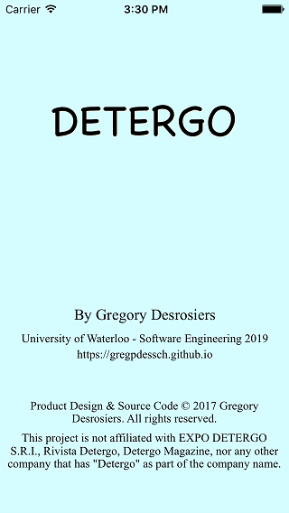
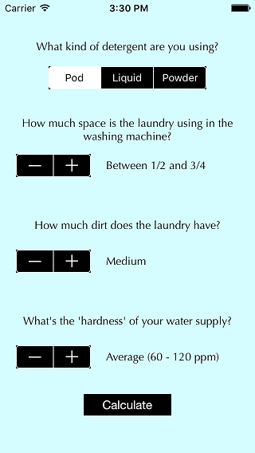
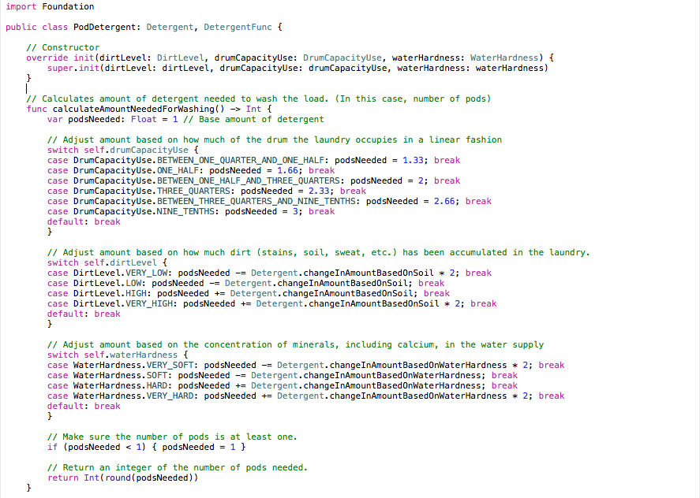
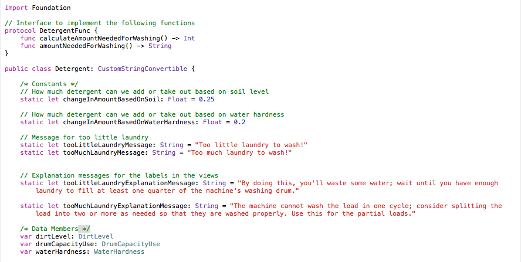
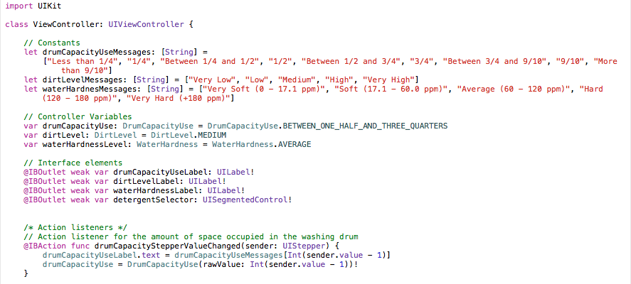

Developing DETERGO
About three weeks ago, I was thinking of working on something that involved Swift, the current programming language in iOS development, replacing Objective-C. This May, one thing I did while I was looking for a co-op this summer is completing a training course on the programming language through this free app for Android called SoloLearn (
https://www.sololearn.com)
What I decided to do out of plain interest is go back to that course and work my way through a training unit the course had involving XCode and Swift to program an app that is simply a to-do list with a table-based view and view controller. At first, I didn’t really had a strong idea on what kind of app I would be building, but being considerate on how learning a lot means better chances of finding a co-op that involves learning stuff quickly, I decided to go with something very basic: restructuring my original DETERGO script coded in Ruby as a single iOS app.

DETERGO is a program that aids people with figuring out how much laundry detergent is needed to wash their clothes, designed into consideration some variables that affect how much detergent you put in when you wash your clothes. For a start, I did some research and broke it down to just three simple variables: how much space the clothes occupy the washing machine drum, how much dirt the clothes have including regular sweat and odor, as well as the hardness of your water, meaning how much impurities exist in your water supply by the concentration of minerals including calcium.

All you have to do to estimate how much laundry detergent you need is simply select your type of detergent (pods like Tide Pods, liquid such as Arm & Hammer Liquid Laundry Detergent in the Sensitive Skin kind, or powder like Sunlight Compact Laundry Detergent with a Lemon Fresh scent). Use these three steppers to select how much space is occupied in the drum, how much dirt your clothes have, and how hard your domestic water supply is. (In the Region of Waterloo, it is somewhat hard because there’s a high amount of calcium) Then just tap on Calculate, and an alert comes up telling you how much to use, and you’re on your way to washing your clothes.
This app is programmed using the model-view-controller paradigm with one exception: because the app only runs on two screens and that the main screen has 11 widgets, mostly labels, they are not nested in a traditional observer class. Instead, they are declared explicitly in the controller that manages the interactivity with the main screen.
Everything is completely programmed by me, with no dependencies other than the generated code XCode provided as well as the standard Swift libraries. It is written in Apple Swift v2.2 and put together using XCode 7.3.1. One of my classmates said to me that Swift is updated so often some companies don’t bother using it because of the notorious bugs and refactoring that comes in when a new version is introduced.
What I did to start off the project is convert the data models I defined in my Ruby script as three classes into classes of their own on XCode, as well as their superclass, Detergent. I started out with Detergent and worked my way through to defining the three subclasses I had: PodDetergent, LiquidDetergent, and PowderDetergent.
While I was programming the models, I did do some refactoring, such as using switch-case blocks instead of a series of if-else statements. In addition, since in my Detergent class, I had two methods that are not implemented, I had to find a way to declare these two abstract. Unfortunately, in Swift, there’s no way to define an abstract class. There is a compromise I found: protocols, which is exactly like an interface in Java, C++, C#, and so on. So I defined these two function signatures in a protocol called DetergentFunc.
I did wanted to try polymorphism to make some code in my main view controller much simpler, but I found out that I would have to declare the Detergent class to implement the DetergentFunc protocol, meaning that I am obliged to define these functions in the Detergent class. Because protocols are more used for structs instead of classes, and that structs are more for explicit data types instead of defining a real-life object, I couldn’t get any polymorphism at all.
Anyway, when you have more laundry in the machine, you think you would need more detergent. And you’re right; what I did was for each type of detergent, have a switch-case block that adjusts the initial amount of detergent I need for the load based on how much space your laundry occupies the drum. This is sort of similar with how much dirt you have and how hard the water is. But generally, if you have less dirt in your laundry, you can save up some detergent for future loads. It’s the same with water hardness; if the water does not have a high amount of minerals including calcium, it’s much easier to wash the clothes and hence you can reduce the amount of laundry detergent you need.
For this, what I programmed in each data model type is a function that calculates how much laundry detergent you need in your load. If you have less space being occupied, less dirt and less concentration of minerals in your water supply, you need less detergent. But if you have more space occupied, more detergent is needed. As there is no explicit measurement for how much is to change based on drum capacity use, amount of dirt, and water hardness, I decided to come up with my own values on how much would be changed based on the amount of dirt and water hardness, and simply figuring out how much minimal detergent is needed for a normal load for this capacity.

In addition, in my base class (Detergent), I have a function that returns an enum value as a flag to tell whether there’s too much laundry, or too little, for washing, based on how much space is occupied in the drum.

Now, when you tap on the plus or minus buttons in the stepper widgets, in the code, you may be thinking you are manipulating a string. But you’re actually wrong; for performance reasons, I decided to declare the possible states of these three wash variables as enumerations / enums. It not only prevented me from running into trouble with trying to figure out which value is which, but the states I defined in these enums are just names of the different states I have, as it sounds like pure English, where I can just type them up as I need to.

The controller has four action listeners. You can’t tell in the Swift code itself which widget this action listener belongs to, because the function that’s being called by the widget under a certain event in Swift is actually defined in the view’s layout file, a .storyboard file. What I did to bind these action listeners to the widgets is simply set up connections, through Xcode between the widgets and the underlying code in the Interface Builder. This can also be done in the source code of the .storyboard file as well.
And finally, last but not least, the view itself, which drives the whole shebang. When I tried out some of the widgets, I felt a little bored by how the default colors and font family was used. So what I did was make the whole background a subtle blue shade as a strong contrast to the black-and-white steppers and the segmented control at the top. I selected Optima as the font family for the labels because it did look a little fancy, but not too much in a very “video game” like way.
Out of pure interest, I made a title screen (as you’ve probably seen at the start of this blog) as well to introduce the user in a more catchy style rather than just a plain white start screen. I just used mostly Times New Roman as the font for all the labels except the one that says “DETERGO,” as that one is in Chalkboard SE.
Well, there you have it; one iOS app ready to be tried out. It’s been a good project, but now it’s time for me to switch focus and work on something else I would enjoy more.